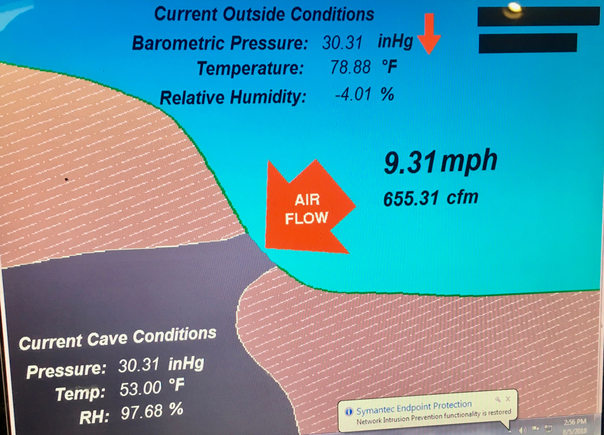
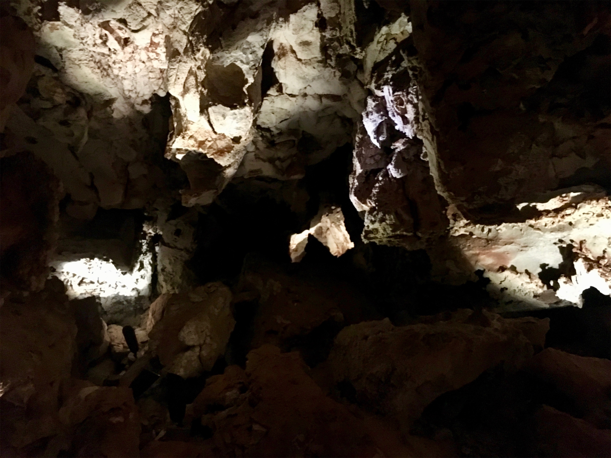
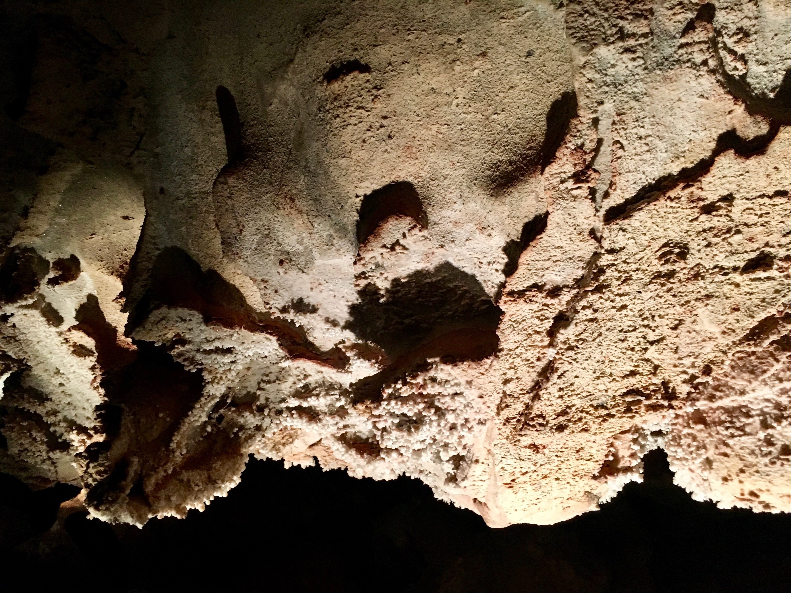
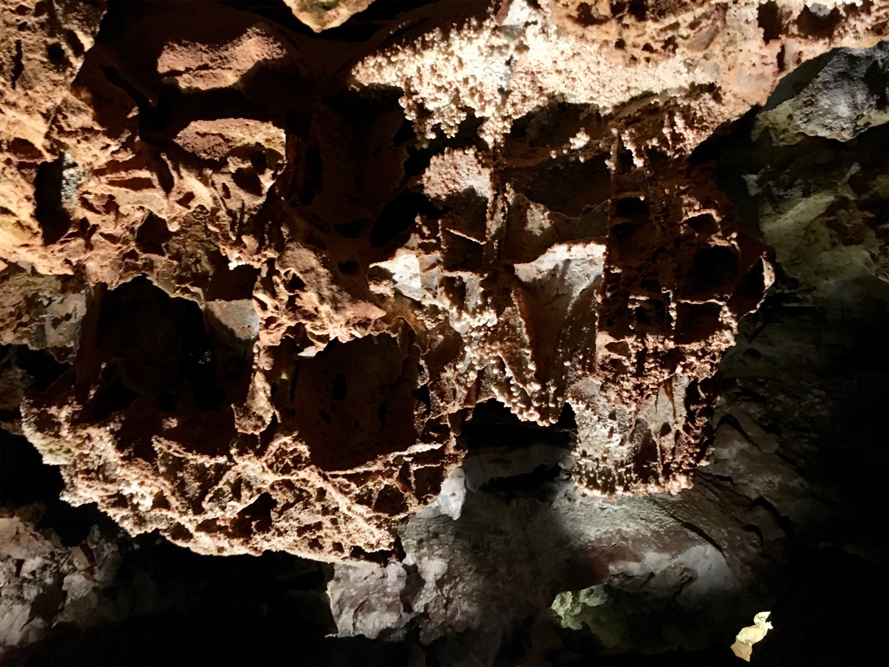

Sunday, Aug 5, 2018, 2:21 PM MDT
Wind Cave National Park, Hot Springs, SD, United States
64°F Mostly Cloudy
64°F Mostly Cloudy
![]()
8/4 Estes Park, CO -> Morrill, NB 180 mi, 3.5 hr
8/5 Morrill, NB -> Wind Cave Visitor Center, SD 172 mi, 4 hr
Trip Total: 10,977 mi
Headed east from Estes Park, we drove along the very scenic Big Thompson Canyon and River to I-25, then headed north on rolling land, with the Rockies towering on our left. We then jogged east and north to drive through the Nebraska panhandle to our overnight stay in the too-small town of Morrill. The next morning, we had breakfast at the wonderful Mixing Bowl in Gering, just south of Scottsbluff and the famous Scotts Bluff landmark along many historic pioneer trails. We drove through the countryside and entered South Dakota, which felt a little Minnesota-ish, to the Park. We started to see many motorcycles, and realized that it is Sturgis week, and that they will be with us for the rest of the trip.
Wind Cave has only one natural entrance that is a hole so small that only our slim boys could fit in it, yet it is the portal to the densest, and sixth longest, cave system in the world. It has 140 miles of passageways packed in only 1 square mile. It is named “wind” because it blows air out and in depending on the barometric pressure difference between the cave and the outside, sometimes up to 25 mph at the natural entrance. We took the hour-long Garden of Eden tour, and an elevator brought us 100 ft underground to the start. The cave is also famous for some unique features, such as boxwork, flowstone, frostwork, and popcorn. The park is also famous for wildlife on the prairie above. We saw several bison, many prairie dogs, and a pronghorn antelope.




